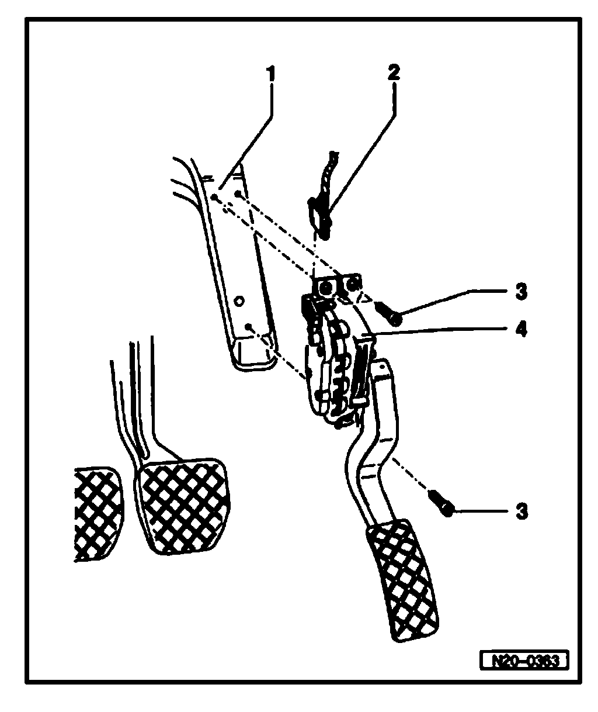

Removal and Replacement
Electronic Power Control (EPC)

1 - Bracket
^ Removing and installing. Refer to Brake pedal - Assembly overview.
2 - Connector
^ Black, 6-pin
3 - 10 Nm
4 - Throttle Position (TP) sensor -G79 Sender -2- for accelerator pedal position - G185-
^ Not adjustable
^ Remove footwell cover to remove sender